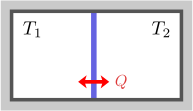

1.2つの容器の熱接触
熱接触時の終状態は、式(
)と式(
)を連立すれば決まる。理想気体の場合、終状態は、式(
)となる。
熱接触した後の温度は式()で決まる

右図のように、温度が異なる2つの容器を用意し、接触させたまましばらく放置する。すると、両者の温度は等しくなる。この時（＝終状態）の温度が知りたい。（右図の
という表記は、壁が熱を通すことを示す。
は熱を表す。外部の壁は熱を通さないとする。）
この実験には再現性があることが知られている。即ち、同じ容器・内容物のもとで、同じ初期温度
で実験を行うと、終状態の温度
（
）はいつも特定の値になる。
は、
の関数となるわけである。（再現性は、物理法則の現れに他ならない。再現性のある実験を起点として、理論を構築するのが物理学の基本的な考え方である。実際、力学編では、投げたボールの運動に再現性があることを議論の起点とした。）
未知数は
の2つなので、これを求めるには、2つの条件式が必要である。まず、温度が等しくなるのだから
が成り立つ。残りは1つ。電磁気学編の第7章で述べたように、系全体のエネルギーは常に保存するので、2つの容器を合わせた全体のエネルギー
が保存する：
これが、もう1つの条件である。
細かいことを言うと、全エネルギーが各容器のエネルギーの和の形で書けるのは、容器間にマクロな相互作用がない場合である。例えば、容器内の物質が電荷を帯びていてその影響が無視できない場合、クーロンポテンシャルを加えなければならない。しかし、特に本質ではないうえに例外的なので、以下では、式()の形で書ける場合を想定する。
以上により
等温条件エネルギー保存則
を連立することにより、2つの未知数
が確定する。ただしこれを解くには、式(
)を温度に関する方程式にする必要がある。そのためには、各容器について、温度
からエネルギー
を決める式
（エネルギー方程式という）を求めなければならない。
この実験の結果は、容器内に何がどれだけ入っているかに依存するわけだが、それを決める容器の個性はエネルギー方程式の形でのみ現れるのである。
とはいえ、いくつか疑問点が残る。エネルギーを決めると温度が決まるというのは自明ではない。温度という馴染みのある概念も、これまで出てきていないので定量化の方法を与える必要がある。エネルギー方程式をどのように測定するのか。この章では、これらについてそれぞれの節で述べたうえで、理想気体の場合に冒頭の問題を解く。
平衡状態は、エネルギーだけで決まる温度の定量化エネルギー方程式の測定理想気体の場合の解
1.1平衡状態は、エネルギーだけで決まる
断熱的な（＝熱を通さない）容器をしばらく放置すると、「容器内の温度・圧力・密度などのマクロな量の分布が時間的に変化しない状態」になることが経験的に知られている。これを平衡状態という。
この節では、ミクロな分子の運動方程式を用いて直感的に考察し、エネルギーの値から平衡状態が一意的に決まることを述べる。
平衡状態は、式()と式()だけで決まる
物質は、膨大な数の原子・分子でできている。これまでの力学の知識を使ってこれらを考察するには、とりあえず運動方程式を立てることから始めるのが自然だろう。容器内の
番目の分子の運動方程式は
分子間相互作用容器の壁から受ける力重力などの外力
という形で書ける。後は、全ての
に対して初期位置
と初期速度
を与えれば、運動が一意的に決まる。（簡単のため単原子分子を考えている。多原子分子の場合は、座標
だけでなく、回転や振動も考慮する必要がある。）このように分子の運動からマクロな性質を考えることを、分子運動論という。
ただし、今知りたいのは、平衡状態であって、個々の分子の詳細な運動ではない。冒頭の話に立ち返ると、エネルギー方程式
が存在するので、その逆関数
も存在する。即ち、エネルギー
から温度
が決まるはずである。これは、
を決めれば、平衡状態が決まるということではないだろうか。実際、初期状態が少々特殊な状態であっても（例えば、1つの分子に全ての運動エネルギーを集中させても）、衝突を繰り返すうちに平均化されていって、同じ平衡状態に落ち着きそうである。
このように
ミクロな運動方程式が同じであれば、エネルギーが等しい任意の初期状態は同一の平衡状態に移行する
という性質を、エルゴード性と呼ぶことにする（一般的な用法と少し違う）。以降では、この性質が満たされていることを仮定する。エルゴード性を実験的に確認するには、容器のエネルギーを変化させた後で元に戻して、同じ平衡状態に戻ることを、様々な設定で確かめればよい。
エルゴ―ド性(
)を仮定すれば、容器に入った気体の平衡状態を決めるのに必要なパラメータは、運動方程式を確定するのに必要な
分子の種類・分子の数・容器の形状・外力など
および、運動の激しさを特徴づける
エネルギー
だけということになる。
（容器の形状は、式()の
を決めるのに必要である。）
変数(
)については、今のところ固定して考えているので、平衡状態を決めるパラメータは、エネルギー(
)のみということになる。エネルギー方程式が存在するのは、このエルゴ―ド性のためといえる。
多くの場合エルゴード性が成り立つが、ここでは、エルゴ―ド性が成り立たない場合を挙げておく：
- まず、2つの容器が別々の場所で孤立している場合である。この場合、系全体のエネルギーを決めただけでは、それぞれの容器にエネルギーをどう分配するかが決まらないので、平衡状態も一意的には決まらない。
- 他にも、履歴効果（＝どのように準備したかによって状態が異なる現象）がある場合もエルゴード性が成り立たない。例えば、水は
以下では凍るが、ゆっくりと静かに冷やしていくと、水のまま氷点下にすることができる（過冷却）。そのため、氷点下の氷と、氷点下の水という2種類が存在し、エネルギーだけではどちらか決まらない。ほかにも、黒鉛とダイアモンド、「水素・酸素の混合気体」と「それに火花を散らして反応を起こしたもの」（火花が十分小さければエネルギーの変化は無視できる）、などがある。
1.2温度の定量化
温度を測定するには、もちろん、測りたい容器内に温度計を入れればよい。温度計には様々なものがあるが、例えば棒温度計は、水銀やケロシン（灯油の主成分）などの体積が、温度を上げると膨張する性質を使っている。体積に応じて目盛りを振れば温度計が作れる。ただし、どのように定量化するか（＝目盛の振り方）に任意性がある。一方、温度が等しいとか、どちらが高いか（低いか）という性質は、目盛りの取り方によらずに決まる。
この節では、温度の定量化の方法として、日常的に用いられる温度目盛である「セ氏温度」と、原点の取り方をより理論的にした「理想気体温度」について述べる。
セ氏温度：式()
セ氏温度は、1気圧下での氷の融点を
、水の沸点を
と取ることによって定義される。単位は
であり、読みは度・度C・セルシウス度などである。
これら以外の温度、例えば、
や
を決めるには、基本的には、温度によって体積
が変化する物質を使って、補間すればよい：（添え字
はセ氏温度であることを示す）
（圧力変化によって体積が変化しないように、圧力は固定する。）その物質の温度を様々に変えて、そこに差し込んだ棒温度計に
の値を刻んでいけば、目盛りが確定し温度計が出来上がる。この温度計を使って、任意の物質の温度を測ることができる。
しかし、こうして決めた温度目盛は、用いる物質によって異なってしまう（例えば目盛りの
に対応する温度が物質によって異なる）。温度を測るだけであれば、どれか1つを基準にとって固定してしまえば矛盾はない。しかし、特定の物質に依存してしまうのは、理論的には好ましくない。温度自体は、物質によらない一般的な性質なので、温度目盛についても、物質によらない一般的なものがあるとよい。
式(
)による温度目盛がよく一致するような物質として、密度が低く、温度が十分高い気体が使える。これを用いて、式(
)から温度目盛を作ると、よい近似で、気体の種類によらずに温度目盛が一致することが知られている。常温・常圧の空気は、この用途に使える。分子運動論的に言うと、
（密度が小さくなることにより）分子間の距離が大きくなり、また、
（温度が高いことにより）速度が大きくなるため、分子間力や外力の影響が小さくなる。即ち、式(
)の右辺は、壁との衝突を除いて、無視できるようになるということである。このように壁以外との相互作用を小さくしていった極限を、理想気体という。
理想気体温度：式()
式(
)によると、温度
が下がるにつれて、
は小さくなる。
は当然ゼロより大きいので、
には下限
があることになる。
は、式(
)の
を測定から決めたうえで、
とすることにより得られ
となることが知られている。これを絶対零度という。これは、理想気体に十分近い気体を使って得られるものであるが、実在の気体の体積をゼロにすることはできないので、形式的なものである。
この
を温度目盛の原点とするのが自然である。これを、理想気体温度といい、単位を
と書きケルビンと読む。前述のセ氏温度とは、原点の位置が異なるだけであり、
の間隔は、
と同じである。即ち、理想気体温度
とセ氏温度
との関係は
となる。
（現在では、理想気体温度が先にあって、セ氏温度をこの式で定義する。等号になっているのはそのためである。）理想気体温度の場合、式(
)に対応する式は
である。
（分母は
単位のままである。上式を導出するには、絶対零度の定義
の逆符号を式()に足せばよい。）理想気体では、圧力一定のもとで、体積と温度が比例するわけである。この式が使えるのは、理想気体に十分近い気体だけである。
これ以降、温度目盛として、理想気体温度を使うことにする。理想気体温度は、温度の原点を決められるという意味で、より理論に適していると考えられる。目盛の幅は決まらないが、これは例えば、長さや時間間隔の単位に任意性があるのと同じなので、このままで問題ない。もちろん、理想気体自体は存在しないし、体積ゼロの極限というのも物理的にはあり得ないので、厳密な定義というわけではない。実在の気体は、温度を下げていくと理想気体から外れていくので、極低温において、実験的に理想気体温度を定義することはそもそもできない。（熱力学的に自然な温度の定量化を見つけることは、熱力学の大きな目標の一つであり、第4章の熱力学温度によって達成される。ただし、熱力学温度は理想気体温度と一致するので、実用上は同じものと考えてよい。）
1.3エネルギー方程式の測定
冒頭でも述べた様に、エネルギー
と温度
を結び付ける式を、エネルギー方程式という。1.1節で述べた様に、エネルギー
を決めれば、平衡状態が決まるので、温度
が決まる。即ち、
は
の関数である：（
は
の略記）
この
またはその逆関数
のことも、エネルギー方程式と呼ぶことにしよう。（手をこすると暖かくなることからも分かるように、エネルギーを与えると温度が上げることができるので、このような関係式が存在することはもっともらしい。）
エネルギー方程式
が分かれば、式(
)は
となり、温度だけの関係式になり、式(
)を解くことができる。
（容器ごとにエネルギー方程式の関数形は異なるので、
などと書いたほうが曖昧さがないが、下添え字で分かるので省く。こうしないと、後の章で変数が増えた時に見づらくなる。）
熱力学では、
は実験的に決めることになる。この節では、実験によってエネルギー方程式を決定する方法について述べる。（ミクロな法則からエネルギー方程式を導くことも考えられるが、それは、統計力学という分野の関心事である。）
エネルギー方程式は、熱容量の測定から決まる
エネルギー方程式
を決めたいわけだが、エネルギーは直接測定できる量ではない。（電磁力学編の第7章で見たように、関係式
が成り立つので、質量
からエネルギーを決めることもできるはずだが、質量の測定精度に比べて変化が小さすぎて無理である。）そのため、温度を微小量
だけ変化させるのに必要なエネルギー
を測定することを考える。そうすれば、1次近似：（
は
の
微分、以下の【1.3-注1】）
から
が求まる。これは容易に測定できる。後は、様々な
で測定して
の関数形を確定させ、積分すれば、エネルギー方程式
が求まる（定数を足す任意性がある）。
を熱容量といい、直感的には、温度を
上げるのに必要なエネルギーである。
【1.3-注1】偏微分の略記
関数
を
と略記する：
その偏微分を、
にドットを付けて表す。例えば：
補足
一般的な表記法ではない。なお、最後の式(
)を使うのは、偏微分が順序によらない
（＝2階全微分可能な）場合のみである。
1次近似は以下のようになる：
は1次近似であることを表す（力学編の【1.1-注1】参照）。
1.4理想気体の場合の解
この節では、1.2節で述べた理想気体の場合について、エネルギー方程式(
)を与え、冒頭の問題の解(
)を導く。
理想気体のエネルギー方程式：式()
理想気体に近い気体の場合、熱容量
は温度にほぼ依存しないことが、実験的に知られている。この値を
とおく：
これを通常の微分方程式の形で書くと
となるので、解は、適当な基準エネルギー
での温度を
として
となる。エネルギーの原点に任意性があることを使って、
の時に
となるように定義すれば簡単になる：
これが、理想気体のエネルギー方程式である。
理想気体の場合の解：式()
エネルギー方程式(
)を使って、理想気体の場合の冒頭の問題を解くことができる。その解は、以下の【1.2-注1】のようになる。
【1.2-注1】理想気体容器の熱接触
理想気体が入った2つの容器を熱積に接触させた時、終状態の温度それぞれ
は
となる。ただし、初期状態の各容器の温度をそれぞれ
、熱容量をそれぞれ
とする。
2つの容器が同じものであれば、
となり、ちょうど平均値になる。
導出
必要な式は、終状態での等温条件(
)：
エネルギー保存則(
)：
エネルギー方程式(
)：
の3つである。
式(
)を式(
)に代入して得られる
と式(
)を連立すると
が求まり、与式を得る。